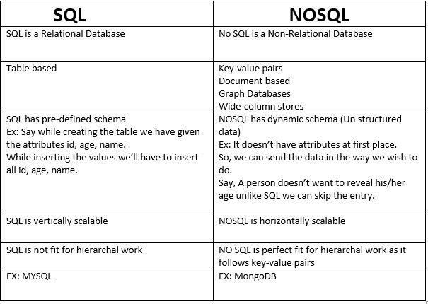

DataBase management:
1)It is a procedure in which huge data can be stored and processed efficiently.
2)It stores the data in the form of tables(SQL) or collections(No SQL).
3)Database has functionalities like creating,updating,dropping tables.
4)Data bases are classified as SQL and NOSQL.

5)In this section, we are going to connect both sql(MYSQL) and nosql(MongoDB) databases to python and perform operations like creating,updating... tables.
Connecting SQL(MYSQL) Database to python:
Methods used for connecting to MYSQL:
connect(): This function sets up the connection to the specified database server.
cursor(): This function instantiates and returns a cursor.
config(): This function allows us to configure the connection.
is_connected(): This function checks whether the connection to database server is available or not.
reconnect(): This function will attempt to reconnect to the database server.
disconnect(): This function disconnects from the database server
commit(): This function will commit the current transaction.
rollback(): This function will rollback the current transaction.
set_autocommit(): This function can be used to enable the commit automatically.
fetchone(): This function returns the next row of a query result set or None.
fetchall(): This function returns all the rows available in the database table.
fetchmany(): This function returns n rows from the database table.
Program: to connect to a database
import mysql.connector
from mysql.connector import Error
def connect():
""" Connecting to MySQL database """
try:
db = mysql.connector. connect(host="127.0.0.1",user="root",passwd="root",db="name_of_db")
if db.is_connected():
print('Connected to MySQL database')
except Error as e:
print(e)
finally:
db.close()
if __name__ == '__main__':
connect()
Program: to insert a record into a database
import mysql.connector as my
db = my.connect(host="127.0.0.1",user="root",passwd="root",db="name_of_db")
print(db)
cursor = db.cursor()
print(cursor)
cursor.execute("insert into student values(17,'abcd')");
print(cursor.rowcount, "record inserted.")
db.commit()
db.close()
Program: to insert a record into a database
import mysql.connector as my
db = my.connect(host="localhost",user="root",passwd="root",db="name_of_db")
cursor = db.cursor()
cursor.execute("insert into student values(18,'asdf')");
print(cursor.rowcount, "record inserted.")
db.commit()
db.close()
Program: to retrieve a record from a database
import mysql.connector as my
db = my.connect(host="127.0.0.1",user="root",passwd="root",db="name_of_db")
cursor = db.cursor()
number_of_rows = cursor.execute("select * from student");
result = cursor.fetchone()
print(result)
db.close()
Program: to retrieve a record from a database
import mysql.connector as my
db = my.connect(host="127.0.0.1",user="root",passwd="root",db="name_of_db")
cursor = db.cursor()
number_of_rows = cursor.execute("select * from student");
row = cursor.fetchone()
while row is not None:
print(row)
row = cursor.fetchone()
Program: to retrieve all records from a database
import mysql.connector as my
db = my.connect(host="127.0.0.1",user="root",passwd="root",db="name_of_db")
cursor = db.cursor()
number_of_rows = cursor.execute("select * from student");
result = cursor.fetchall()
print(result)
for row in result:
print(row)
db.commit()
db.close()
Connecting NOSQL(MongoDB) to python:
Prerequisite-MongoDB:
1) In sql we store data in the form of tables, Here we call it as collections.
2)In sql we have tuples(rows), Here we call it documents.
3)Data is stored in the form of JSON format.
4)Keyvalue pairs enclosed in { } is known as JSON format.
Example:
{"name" : "Manoj", "age":19, "Address":"Hyderabad"}
Installation of MongoDB:
Install MongoDB
To connect python to SQL we need to install a pre defined module called pymongo.
Steps for installing pymongo:
1)Step 1: Open command prompt.
2)Step 2:Type the following command: pip install pymongo
we can import pymongo in our program by using import keyword as it is a module.
Prorgram: For connecting to MongoDB and Creating a database:
import pymongo
myclient = pymongo.MongoClient("mongodb://localhost:27017/")
mydb = myclient["exampledatabase"]
Check if database exist:
It can be achieved in 2 ways.
Method 1: Return your list of databases. and check if created database exist.
print(myclient.list_database_names())
Method2:Check if "exampledatabase" exists:
dblist = myclient.list_database_names()
if "mydatabase" in dblist:
print("The database exists.")
Creating a collection:
import pymongo
myclient = pymongo.MongoClient("mongodb://localhost:27017/")
mydb = myclient["exampledatabase"]
collection = mydb["employees"]
Check if collection exist:
This can be achieved in 2 ways:
Method1:Return list of names of all collections
print(mydb.list_collection_names())
Method2:Check if collection "employees" exist.
collection_list = mydb.list_collection_names()
if "employees" in collection_list:
print("The collection exists.")
Inserting Documents into employees collection:
In MongoDB, By using insertOne() we can insert one Document, whereas by using insertMany() we can insert multiple records.
import pymongo
myclient = pymongo.MongoClient("mongodb://localhost:27017/")
mydb = myclient["exampledatabase"]
collection = mydb["employees"]
dict = { "name": "xyz", "address": "Banglore" }
x = collection.insert_one(dict)
_id in MongoDB:
In MYSQL, user defines primary key which is helpful in identifying records uniquely, but in MongoDB the data is unstructured so one attribute cannot act as primary key.
So MongoDB, assigns _id automatically that acts as primary key.
Now let us insert a document and return its _id.
import pymongo
myclient = pymongo.MongoClient("mongodb://localhost:27017/")
mydb = myclient["exampledatabase"]
collection = mydb["employees"]
mydict = { "name": "xyz", "address": "chennai" }
x = collection.insert_one(mydict)
print(x.inserted_id)
Inserting multiple documents into collection and return their _id's:
import pymongo
myclient = pymongo.MongoClient("mongodb://localhost:27017/")
mydb = myclient["exampledatabase"]
collection = mydb["employees"]
mylist = [
{ "name": "a", "address": "Mumbai"},
{ "name": "b", "address": "Delhi"},
{ "name": "c", "address": "Kolkata"},
{ "name": "d", "address": "Rajasthan"},
{ "name": "e", "address": "Bihar"},
{ "name": "f", "address": "Hyderabad"},
{ "name": "g", "address": "Hyderabad"},
{ "name": "h", "address": "Banglore"},
{ "name": "i", "address": "Chennai"},
{ "name": "j", "address": "Banglore"},
{ "name": "k", "address": "Kerala"},
{ "name": "l", "address": "Hyderabad"}
]
x = collection.insert_many(mylist)
#print list of the _id values of the inserted documents:
print(x.inserted_ids)
Find():
Find in Mongodb is like select in MySQL.
The find_one() method returns the first occurrence in the selection.
import pymongo
myclient = pymongo.MongoClient("mongodb://localhost:27017/")
mydb = myclient["exampledatabase"]
collection = mydb["employees"]
x = collection.find_one() #As we are not passing anything in find_one() we are retriving first document
print(x)
Program for performing select * operation in MongoDB:
import pymongo
myclient = pymongo.MongoClient("mongodb://localhost:27017/")
mydb = myclient["exampledatabase"]
collection = mydb["employees"]
for x in collection.find():
print(x)
Say, while returning the document, you dont want _id and address , you want only the name of the employee.
import pymongo
myclient = pymongo.MongoClient("mongodb://localhost:27017/")
mydb = myclient["exampledatabase"]
collection = mydb["employees"]
for x in collection.find({},{ "_id": 0, "name": 1, "address": 0 }):
print(x)
Queriying :
Find employees from Hyderabad.
import pymongo
myclient = pymongo.MongoClient("mongodb://localhost:27017/")
mydb = myclient["exampledatabase"]
collection = mydb["employees"]
query = { "address": "Hyderabad" }
required_document = collection.find(query)
for x in required_document:
print(x)
For Advanced queriying techniques, refer MongoDB Documentation.
Deleting Documents:
To delete documents with address Kerala.
import pymongo
myclient = pymongo.MongoClient("mongodb://localhost:27017/")
mydb = myclient["exampledatabase"]
collection = mydb["employees"]
query = { "address": "Kerala" }
collection.delete_one(query)
To delete Multiple documents
To delete all the documents whose address starts with letter "K"
import pymongo
myclient = pymongo.MongoClient("mongodb://localhost:27017/")
mydb = myclient["exampledatabase"]
collection = mydb["employees"]
query = { "address": {"$regex": "^K"} }
x = collection.delete_many(query)
print(x.deleted_count, " documents deleted.")
To drop a collection:
import pymongo
myclient = pymongo.MongoClient("mongodb://localhost:27017/")
mydb = myclient["exampledatabase"]
collection = mydb["employees"]
collection.drop()
Update Collection:
If one document needs to be updated, use update_one() else use update_many().
Example of update_one():
To change address from chnnai to banglore of first instance.
import pymongo
myclient = pymongo.MongoClient("mongodb://localhost:27017/")
mydb = myclient["exampledatabase"]
collection = mydb["employees"]
query = { "address": "Chennai" }
newvalues = { "$set": { "address": "Banglore" } }
collection.update_one(query, newvalues)
#print "employees" after the update:
for x in collection.find():
print(x)
Updating multiple documents using update_many():
updating all the documents whose address starts with D to Agra
import pymongo
myclient = pymongo.MongoClient("mongodb://localhost:27017/")
mydb = myclient["exampledatabase"]
collection = mydb["employees"]
query = { "address": { "$regex": "^D" } }
newvalues = { "$set": { "name": "Agra" } }
x = collection.update_many(query, newvalues)
print(x.modified_count, "documents updated.")